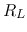
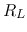
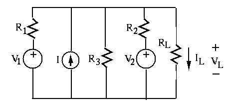
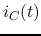
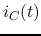

Next: About this document ...
Midterm Exam (summer 2014)
- (33 points)
Find the current
 through and volage
through and volage  across the load resistor
 in the circuit, where , ,
across the load resistor
 in the circuit, where , ,  ,
,
 . If it is desired for to dissipate maximum
amount of energy, what value should take?
. If it is desired for to dissipate maximum
amount of energy, what value should take?

Solution: Use Thevinen's theorem.
- (33 points)
In the AC circuit shown below, , , , and
with angular frequency
 .
Find
.
Find
- currents
 , , and
, , and 
- voltages and


Solution:
- (34 points)
In the circuit shown below,
 , ,
, ,
 ,
,
,
,  . The switches
. The switches  and
and  are switched from
right to left at
are switched from
right to left at  . The system has reached steady state by .
. The system has reached steady state by .
- Apply KCL to the top node to set up a first order DE in terms
of voltage
 across
across  . Find for
. Find for  by the short-cut
method in terms of
by the short-cut
method in terms of  , , and .
, , and .
- Apply KCL to the bottom node to set up a first order DE in terms
of current
 through
through  . Find for by the short-cut
method in terms of ,
. Find for by the short-cut
method in terms of ,  , and
, and  .
.
- Find
 for .
for .
Solution:
Next: About this document ...
Ruye Wang
2015-07-15